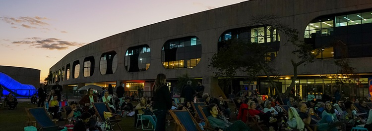

кино

спецвыпуск Аль Пачино (02/07/24 — 04/08/24)
Это мероприятие — праздник таланта и карьеры художника, чье творчество десятилетиями восхищало публику. Аль Пачино, известный своими ролями в таких знаковых фильмах, как трилогия «Крестный отец», «Запах женщины», «Собачий полдень» и «Лицо со шрамом», станет главным героем этой кинематографической ретроспективы. Половина билета стоит 5 реалов, а полный билет — 10 реалов, их можно купить на официальном сайте CCBB. Текущее расписание состоит из двух кинопоказов в день, со вторника по воскресенье.
музыка
Super Jazz festival (12/06/24 — 24/07/24)
Фестиваль Super Jazz посвящен афро-бразильской музыке и джазу. Различные группы, диджеи и певцы, от громких имен до новичков в инди-индустрии, объединяются, чтобы этот проект воплотился в жизнь на травянистых открытых площадках CCBB Бразилиа. Это хорошая возможность расслабиться, снять напряжение и насладиться видом сумерек. Мероприятие относительно короткое: начинается в 17:00 и заканчивается около 21:45.
экспонаты

Хироми Нагакура до Амазонии с Эйлтоном Кренакомk (11/06/24 — 18/08/24)
На этой выставке представлены 120 фотографий известного японского фотографа Хироми Накагуры, сделанных во время поездок с Эйлтоном Кренаком. Поездки проходили в основном по территории Амазонии в период с 1993 по 1998 год. Выставка позволяет зрителям взаимодействовать с предметами, взятыми из деревень, а также предлагает множество мер доступности, таких как аудиоописания, тактильные доски и видеолибры. По словам Кренака: «Моменты близости и удовлетворения между вечными друзьями — вот что вдохновило этот фотографический показ, опосредованный встречами с прекрасными людьми, которые приветствовали нас на своих кухнях и каноэ, на своих пляжах смеха и, наконец, в своих деревнях: Ашанинка». , Ксаванте, Крикати, Гавиан, Яванава, Хуни Куин и другие общины у реки Журуа и вокруг региона Лаврадо в Рорайме». Безусловно, интересная выставка для тех, кто интересуется северной культурой Бразилии, особенно коренной.